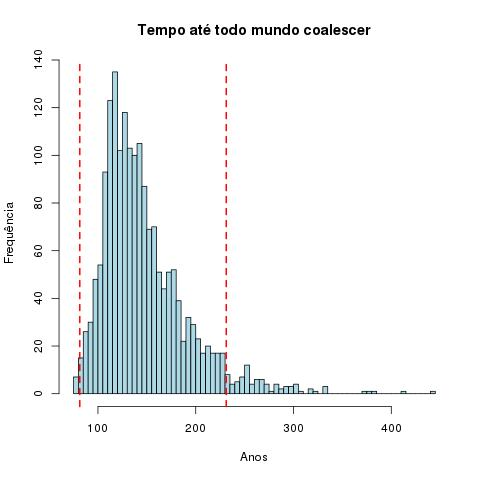
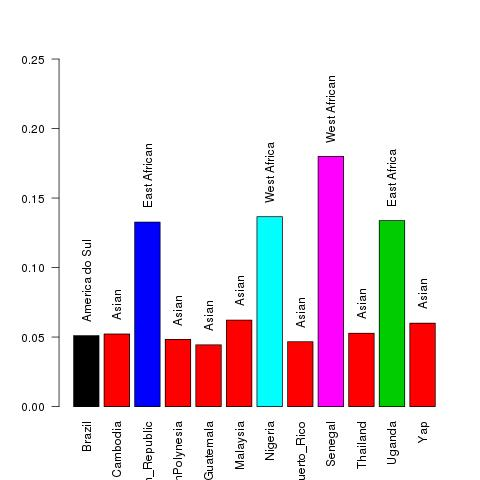
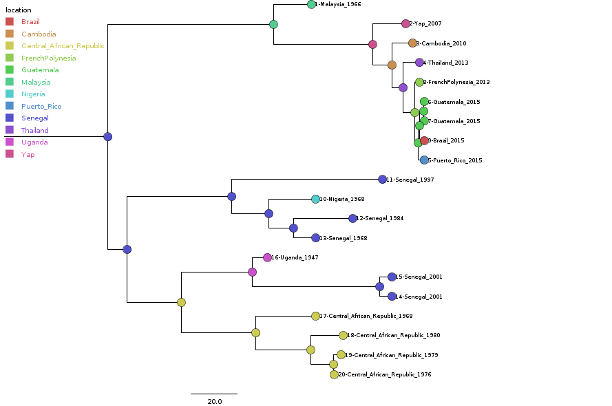
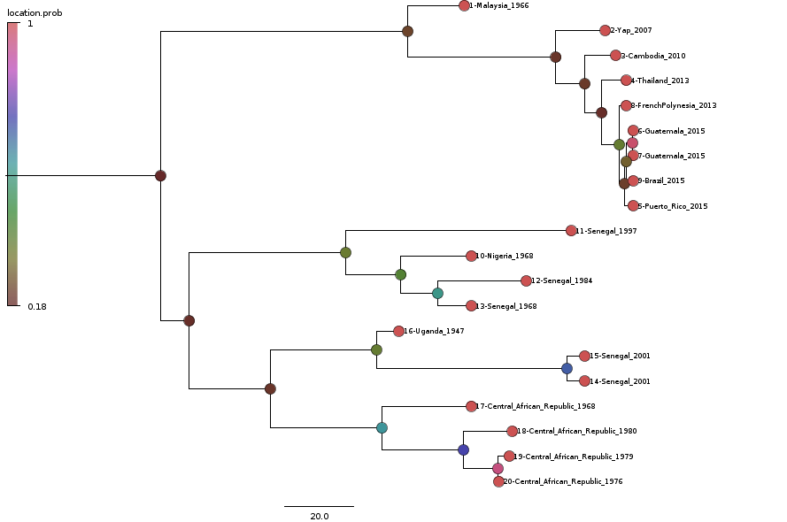

No arquivo zika_2.log
Tempo até o ancestral comum de todas as linhagens usadas:
> summary(zika_2.log[-c(1:round(0.1*nrow(zika_2.log))),"treeModel.rootHeight"]) Min. 1st Qu. Median Mean 3rd Qu. Max. 76.53 116.80 137.20 147.10 166.50 440.10 > int_conf_root<-HDIofMCMC(zika_2.log[-c(1:round(0.1*nrow(zika_2.log))),"treeModel.rootHeight"]) !> int_conf_root [1] 81.41988 231.18981
!> date_decimal(int_conf_root) [1] "81-06-03 06:09:17 UTC" "231-03-11 06:44:08 UTC"
Var1 Freq 1 Brazil 0.05108273 2 Cambodia 0.05219323 3 Central_African_Republic 0.13270405 4 FrenchPolynesia 0.04830650 5 Guatemala 0.04441977 6 Malaysia 0.06218767 7 Nigeria 0.13659078 8 Puerto_Rico 0.04664076 9 Senegal 0.17990006 10 Thailand 0.05274847 11 Uganda 0.13381455 12 Yap 0.05996669
Reconstrução dos locais
Árvore do paper

Reconstrução dos locais
Teoria da coalescencia